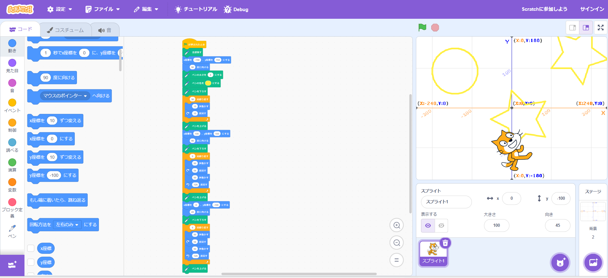
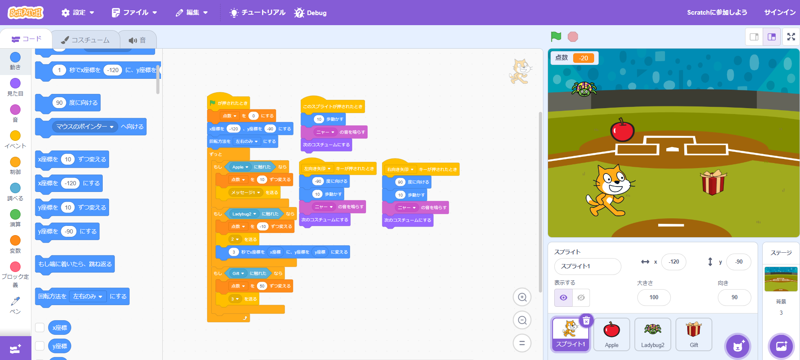

1週目のレポート ： 公大高専１年実習I-1
1b班27番 あまがみ
第1週目
1-1 サイエンスアート

1.内容
スクラッチを使って線を書くプログラムを作成し、サイエンスアートを作った。
まず授業でプログラムの作り方を学び、その後自分の考えたアートのプログラムを作成した。
作成したプログラムは画面左上に黄色い円を、画面右上、下部に黄色い星形を書くようにし、
見た人が星空をイメージできるようにした。
2.感想
時間をかければ人物画もできそうだと思いました。
1-2 ゲーム

1.内容
スクラッチを使って画面上からリンゴ、プレゼント、クモが落ちてきて、当たると得点が上がったり下がったりするプロスラムを作成した。
左右の矢印キーで猫を操作でき、リンゴにあたると１０点、プレゼントに当たると５０点得点が上がり、
クモに当たると得点が１０点下がり、３秒間その場から動けなくなるようにした。
2.感想
今度はもっと時間をかけてシューティングゲームを作りたいなと思いました。
1-3 ホームページ作成
私のホームページ
1.内容
自分のホームページを作成した。
2.感想
最初から型ができていたから簡単に進められているが、
ゼロから作れとなるととても大変だと思いました。
各ページへのリンク
1週目のレポート
2週目のレポート
3週目のレポート
私のホームページ